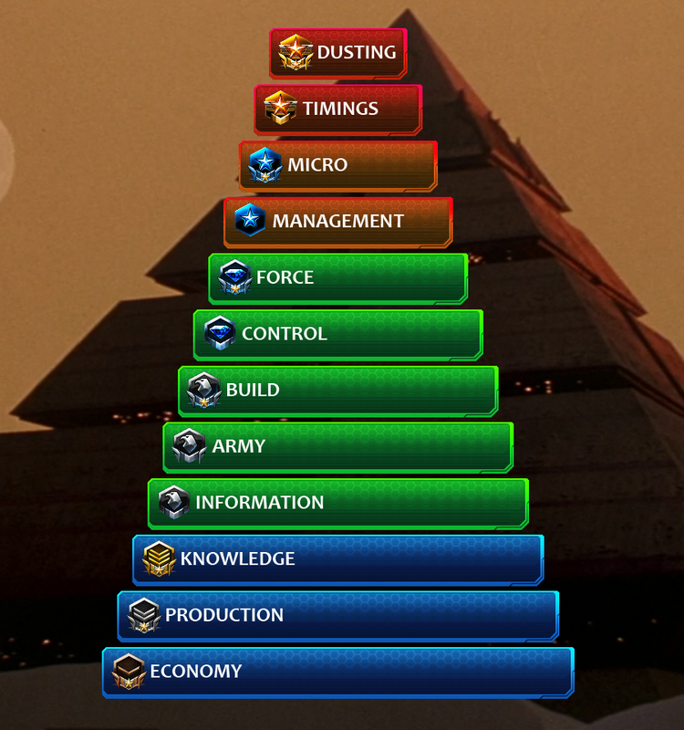

|  |
Economy At its base, Starcraft is a game of economy, as are most RTS games. If you don’t understand this, it is your first step into becoming a better Starcraft player. The very first fundamental concept behind the best players is economy. This implies constant worker production and taking bases in relation with your worker count (approx. 1 base per 25 workers). The sheer amount of money intake will be the foundation of the rest of your progression in Starcraft 2. This leaves us to the second ladder step in the pyramid.Production Production, production, production. The second brick in the Starcraft Pyramid is making as much “stuff” as you can. The sheer number of units popping out on the map will be enough to win against any player who has not mastered this step. At this step, the type of unit does not matter, as long as you fully utilize your economy with lots and lots of production. It can include army, defense and upgrades, just spend that money!Knowledge This step happens out of the game. Knowledge, as in game knowledge, as in knowing what units are, their names, the upgrades they can have, their strengths and weaknesses, etc. You do not need to explicitly use this knowledge in this step, it will come naturally. Simply KNOWING will enable you to move up in the pyramid, and allow you to make decisions.Information Information is what is displayed to you in-game. This starts out with what race your opponent is playing. Then, where he spawned on the map, what he decides to show you, and finally scouting. With proper scouting, you will gather all the information necessary to capitalize on your new-found knowledge of the game and enable you to actually start making on-the-fly decisions about your game specifically. The information gathered will of course enable you to make the correct in-game decisions and follow the right strategy to plow through the opponents that have not achieved this rank yet!Army As weird as it sounds, the army is usually the most under-emphasized aspect of Starcraft. This level of the pyramid includes not only the army composition, but also it’s positioning on the map. This is where you will, for the first time, make in-game, in-the-moment-decisions about what type of units to produce, and WHERE to place them. Put the emphasis on the second part. The positioning of your army is just as important as its composition. You need to defend your bases and engage in the rights spots, with an advantageous position. The spot where your army awaits its order to advance is also crucial here; imagine your army being in the back of your base when the opponent pushes? Once this is mastered, you will plow through any opponent that has not reached this level. Next, we bring structure to your game.Build After the most underrated aspects of the game, comes the one with the most hype. The Build, or build order, the order in which you place down buildings and units to reach a certain goal. Now you have finally reached a point where you understand the game enough to actually optimize what you do and how you do it. This one should be higher in the pyramid if it wasn’t for one of the most awesomest (yes, it’s a word!...) things about Starcraft: The Pros. Professional players have made builds their career goals. They spend hours, days, weeks, months perfecting them. STEAL THEM. Use them! Take advantage of this, and after you master your builds, you will rampage through the ladder. This level emphasizes smoothness and optimization early on, and it will launch you into the mid-game with a huge advantage.Control A relatively small step inside the massive pyramid to mastering Starcraft is Control. This includes and emphasizes Map Control. Obviously, only one player can have map control. But what this level dictates is having map control when you want it, and especially making the most of this positional advantage. Extending on map control is your army control, i.e. moving your army forward and back, left and right, when appropriate. This section will also includes SPELLCASTING during engagements, like storms, fungal and stimpacks, and where to place your spellcasters inside the army. Controlling the bulk of your army and the map is an essential part of your RTS gaming career.Force Finally we get to Force! This is one of the less defined and explored steps of the pyramid. It includes, but does not limit itself to, harassment, pressure, drops, etc. Force does not only mean knowing when to force yourself through the main defense of your opponent, but also knowing when to move forward to FORCE units instead of harvesters (**cough** vs zerg **cough**). It includes making drops happen to FORCE your opponent to lose map control, to FORCE him not to push your base, to FORCE him to rebuild harvesters. This step makes your opponent do what he does not want to do.Management This is the first higher step of the pyramid. This is when you will get harassed, you will lose bases, you will be overwhelmed by the amount of stuff going on. Management is keeping your cool - Of course, you should be keeping your cool and stay on top of all the other steps before this! - So let me rephrase that: It is performing actions you would not perform without pressure. It is rebuilding your base after you lose it. It is having – and keeping – the correct hotkeys during the action (don’t forget to use them!). It is keeping vision of what is happening to fine-tune your reactions, staying on top of the lower levels of the pyramid during heated moments. This goes beyond the information gathered, and focuses on smoothing things out after your build has evaporated. This is obvious, but hard to accomplish and often neglected or forgotten. This one will take practice and experience!Micro Finally, we arrive at micro! Why is it so high up? Because it is the single-most overrated aspect of Starcraft 2. If you have not MASTERED the previous steps, don’t waste your time micro-ing units. Not to say it won’t help, but you can spend your efforts somewhere else. This one has a lot of hype because it is “What the Pros do” They show of their micro, and commentators and spectators love it. You probably all know what micro is: splitting marines, perfect kitting, magic-boxing Thors, blinking away at the perfect moment. The real specific stuff! Again, not to say your micro won’t help you before, but it will never reach its full potential if you do not absolutely master the lower levels of the pyramid.Timings Again, one of the more refined and misunderstood aspects of the game. Tastosis(Tasteless and Artosis) love this aspect in their GSL commentary – with good reason. But you must understand that “Timing Pushes” are incredibly small windows of opportunity that are PLANNED BEFORE THE GAME. They exploit a known weakness in your opponents’ normal build at a very precise time. Do not confuse them with a strong mid game push, or a build order win. Because of their nature, timing pushes usually occur in the early game and sometimes (in very advanced play) in the mid-game. This part of the pyramid also includes very precise timings within your build order (eg.: building your Queen and Roach warren precisely when your pool finishes and you have exactly 300 minerals at that moment). Another note about timings are the ones that will manifest themselves inside the game itself. For example, killing off many harvesters will leave you a open window where you can push because your opponent needs to rebuild his workers. Fine tune and master this top level of the pyramid and you are well on your way of becoming a professional StarCraft player.Dusting This Final step is called dusting because I did not know what else to call it. Imagine building a table. All the levels of the pyramid are a part – Economy is the legs, Timings are the polish. No matter what you do from here, the table will get dusty! At this point, the game will evolve, both the MetaGame (notice how I just NOW mention this!) and the patches (once again, notice how just NOW do I mention patchnotes and balance!), and it will be your job to stay with it and refine your play. Think up new small tiny changes to get your edge (A good example, I saw MMA vs Nestea (I think that was the game) yesterday from GSL August, MMA placed a supply depot to wall in his marine next to the Xel Naga watch tower!). No one will be able to think for you at this point, it’s all up to you! The dusting phase is limitless, and now is when you know you are a true Starcraft Master! |